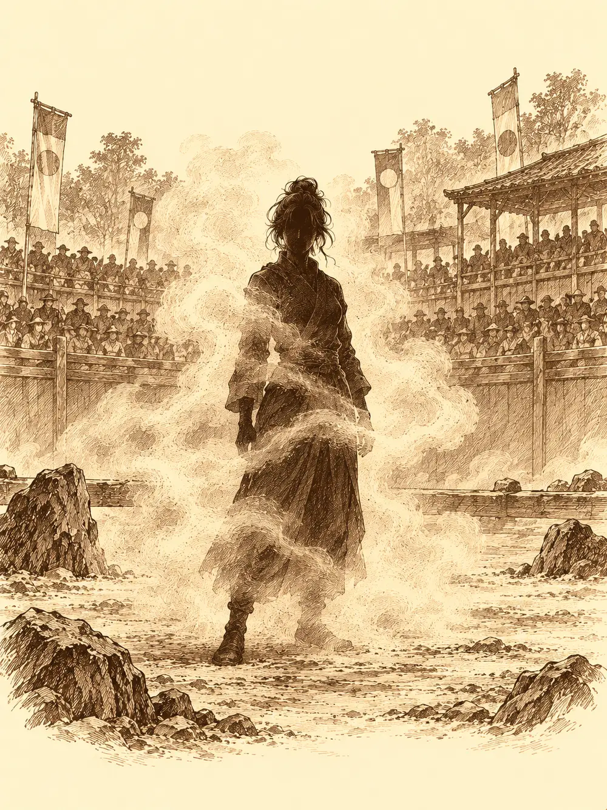

Capítulo 163
Nuevo torneo de Sho
Libro X · Hasta pronto, Kuroto
Los carteles aparecieron una mañana en todas las paredes de Sho. El shogunato anunciaba un torneo de cazadores, un todos contra todos para levantar el ánimo de una ciudad que había visto demonios en sus barrios bajos, que tenía a los tritones haciendo guardia en sus calles y que aún olía el humo de Hakara. Las normas llegaron después en una carta sellada a la base: nada de pociones ni comidas durante el combate, solo los encantamientos lentos que uno pudiera ponerse antes de empezar, golpes finales que no mataran salvo que alguien decidiera lo contrario y cargara con las consecuencias, y quien saliera del círculo, empujado o volando, quedaba eliminado. Habría premio para los tres primeros, y quien ganara podría elegir un objeto.
En la base, la mesa estaba llena de gente que llevaba tiempo sin coincidir. Kazuki había vuelto de estudiar la droga que llamaban Nox, y contaba que la plaga había menguado mucho, como si hubieran dejado de fabricarla en el lugar que él vigilaba. Sirth se llevó aparte a Banzo para hablarle de Archi: creía que el gnomo sufría fiebre abisal y había que vigilarlo. Arwen ya le había puesto las manos encima y lo había dejado más estable. Archi quiso darle un beso a la niña en agradecimiento y ella salió corriendo, porque apestaba a metal. Serafina tenía las manos llenas de astillas de reparar el Rompeolas, y una sonrisa nueva: ella y Guxi volvían a estar prometidos.
La puerta se abrió sin hacer ruido. Kurobane se quedó un momento en el umbral, mirando el tinglado, y estuvo a punto de dar media vuelta. Llevaba un collar de cazador nuevo al cuello.
"Calista me ha permitido volver a prueba", dijo. "Quiero ayudar a arreglar lo que hice".
Pidió perdón a cada uno. Banzo aceptó la explicación sin preguntar más. Serafina se acercó al ninja, se disculparon los dos a la vez sin saber muy bien por qué y acabaron abrazados. Luego el goliat sacó otro collar y se lo puso a Chilia.
"Ahora eres cazadora. Puedes participar".
Chilia se lo miró colgando sobre el pecho como quien mira un juguete. Cogió a Arwen por los tobillos y salió corriendo hacia el estadio con la niña boca abajo, gritando que les iban a ganar.
El recinto estaba a reventar. En la tribuna de los ricos se apretaban los nobles; abajo, vendedores, vecinos, tritones de guardia y Tsugami, vestida como para una boda. El sitial de la shogun estaba vacío, y en el de al lado se sentaba Shizuka con las piernas colgando. Gelbreak pasó junto a Banzo con un gruñido.
"Calista y yo hemos discutido. Parte ha sido culpa tuya. ¿Quién crees que le ha dado el collar al chico? Para demostrarte algo".
Sota, el presentador, fue nombrándolos uno a uno ante un público que aplaudía a cada nombre. A Archi lo presentó como uno de los jefes de Archivolt, la empresa que empezaba a modernizar Kuroto, y se saltó con una tos la línea siguiente de su papel. Había dos caras que nadie esperaba. Una muchacha encogida, de voz casi inaudible, se presentó como Camile, nueva cazadora de Ukio. Y entre los inscritos estaba Zogia, la defensora felina de la aldea, o algo que se le parecía mucho.
Sonó un gong.
Gelbreak desapareció de la vista. Kurobane envolvió a Channi en una burbuja de oscuridad para protegerla, y Arwen respondió con un estallido de luz que quemaba y cegaba; alguien intentó deshacer su hechizo y la niña lo sostuvo. Camile se partió en dos y una copia de sí misma echó a correr en otra dirección. Jin, Kazuki y Serafina se hicieron invisibles, y Guxi se preparó para ver lo que no se veía. Banzo fue a por Archi. Chilia buscaba a quien golpear para dejarlo aturdido, encantada.
Arwen alzó su bastón de olmo y en lugar de un animal le salieron dos gansos con espada, graznando, que se lanzaron contra todo lo que se movía. Kazuki repartía magia con una puntería de noble aburrido. Serafina dejó tonto de un puñetazo a uno de los gansos. Y Banzo encontró la solución más simple a la oscuridad de Kurobane: entró en ella, agarró lo que encontró y empujó. Ninja y pollito salieron rodando fuera del círculo, eliminados, ilesos y furiosos, y la oscuridad se deshizo con ellos.
Archi hipnotizó a medio campo y enseguida cambió de idea y se volvió invisible. Gelbreak reapareció para descargar golpes mentales que dejaron a casi todos aturdidos, con la mirada vacía. Serafina se cebó con Chilia, y Chilia caía y volvía a levantarse con un hilo de vida, una vez, y otra, y otra, riéndose. La falsa Zogia, en cambio, disparaba con una precisión que no era de Ukio: sus flechas aturdían, y una de ellas derribó a Archi en pleno vuelo y lo hizo caer de morros sobre la arena.
Kazuki esperó el momento. Cuando casi todos estaban atontados, convocó una tormenta sobre el círculo y la tormenta sacó de un golpe a Jin, a Guxi y a Serafina. La falsa Zogia sacó un látigo negro y disparó contra Archi, que seguía en el suelo, y por un instante su rostro tembló, como un reflejo en el agua. Gelbreak terminó con el gnomo. Chilia, al fin, se quedó sin hilo al que agarrarse y la sacaron en volandas.
Camile se asomó desde detrás de una roca, quitó la niebla que la cubría y miró a Banzo fijamente. Movió los labios.
"Ahora eres mío. Ve a por Gelbreak".
Banzo se volvió hacia el drow sin querer. Le sonaba esa voz. La había oído muchas veces.
Kazuki salió de la nada y golpeó a la muchacha, que le respondió con un rayo de escarcha. La falsa Zogia cubrió la zona con oscuridad, y Gelbreak no se lo pensó: lanzó sobre aquella sombra un ataque necrótico que arrasó todo lo que había dentro. Zogia cayó al suelo herida y ya no era Zogia: era otra persona, una drow desconocida. Con ella se le cayó también el disfraz a Camile, que no era ninguna muchacha tímida de Ukio.
Era Calista.
Gelbreak la miró. Tiró el estoque a la arena y salió del círculo por su propio pie, sin decir nada.
Al romperse la concentración de la shogun, Banzo volvió a ser dueño de sí mismo. Arwen corrió hacia él, le saltó encima y le mordió con todas sus fuerzas. El goliat la miró, sonrió y se dejó caer de espaldas como un árbol talado.
"Como no ganes, me voy a cabrear bastante".
Quedaban tres. Calista se curó y se escondió tras las rocas. Arwen y Kazuki se lanzaban magia. La shogun salió para encerrar a la niña en una jaula mental y Arwen la sacudió de encima como quien se quita una telaraña. Después la buscó, la encontró y la sacó del círculo con un rayo de luz.
"Kazuki, ven, ven a jugar".
Kazuki, por gastar una broma, se transformó en Chilia. Arwen abrió mucho los ojos.
"¡Chilia! ¡Entonces podemos seguir jugando a pegarnos!".

Se le echó encima con los dientes por delante, y aquel mordisco y lo que vino detrás dejaron al noble en el suelo, sin sentido, con su verdadera cara de vuelta. La niña lo buscó a su alrededor, confundida, preguntando dónde se había metido Chilia.
Arwen estaba sola en el círculo.
Banzo se levantó de la arena, la cogió en brazos y la paseó por toda la plaza alzándola como un estandarte, mientras el público se ponía en pie y gritaba. La niña no sabía de qué iba aquello, pero se dejaba agitar, encantada. Al ver al goliat tan magullado, le puso las manos encima y lo curó con lo que le quedaba.
Calista repartió su parte del premio entre los dos primeros. Kazuki cobró mil doscientas cincuenta monedas, y Arwen dijo que ya pensaría qué objeto quería. Gelbreak, desde fuera del círculo, ordenó a los guardias que se llevaran a la drow inconsciente a las celdas de palacio.
Al día siguiente, Sho salió a la calle con carrozas y flores. Banzo llevaba a Arwen sobre los hombros en la carroza principal, y la gente la llamaba a gritos Guardiana de la Naturaleza y de los Animales, nueva campeona de Kuroto. La niña sonreía sin entender del todo por qué la celebraban por haber derribado a sus amigos. Archi dibujó con nubes, en el cielo, una figura femenina sonriente, y Arwen se emocionó tanto que sintió, por primera vez desde hacía mucho, que tenía una familia. Chilia miraba el collar nuevo y descubría que le gustaba ver a la gente feliz. Channi gritaba, Serafina aplaudía, y Jin y Guxi no cabían en sí de orgullo.
Entre la multitud, en la boca de un callejón, Banzo vio a Danifae. La drow no miraba el desfile. Miraba a Arwen, y más concretamente el vientre de Arwen, donde la niña guardaba desde hacía tiempo una esfera que se había tragado jugando. El goliat dejó a la campeona en la carroza, aceptó su invitación a cenar en la base y a echar luego un pulso con Jin, y fue hacia el callejón.
"Es curioso ver cómo se crea un dios", le dijo a la drow mientras se adentraban en los barrios bajos. "Lo crean las gentes".
"Eso es una idea muy pobre de lo que es un dios, goliat". Sonrió. "Y no la abriré en canal. Simplemente esperaré".
"¿A que muera?".
"Yo no la mataré. Lo hará la esfera. ¿Te acuerdas de lo que le pasó con la de fuego al maestro demoníaco de Gur? Casi no lo cuenta. Después recuperaré la mía".
Banzo le recordó que si la niña moría, ella iría detrás, y que entonces no se cumpliría ni el objetivo de ella ni el suyo. La drow se encogió de hombros. Si moría, sería culpa de ellos por no hacer nada. El goliat propuso echar un vistazo al sur, que estaba demasiado tranquilo.
Atravesaron un campamento donde los soldados tenían cara de miedo. Mientras subían hacia las montañas, Banzo le preguntó por las matronas, por si se mandaba mejor con amor que con miedo. Danifae le dijo que la amistad estorbaba, que el miedo también era una forma de devoción, y que su amistad con Calista se había resentido por haberla liberado a ella. Banzo no le dio la razón. En la zona donde habían desaparecido unos soldados, la drow encontró un rastro y lo siguió hasta una colina. Abajo, unos demonios pequeños y blandos devoraban los cadáveres de los desaparecidos. Banzo esperó un momento por si aparecía algo más grande; no apareció. Danifae bajó con la espada y el látigo de serpientes, y el goliat hizo rodar una roca que aplastó a varios antes de meterse entre los demás. No quedó ninguno. Tampoco ningún soldado vivo.
"¿Cuál era el verdadero motivo de esta salida?", preguntó la drow.
Banzo no contestó.
En palacio, Calista llegó a su habitación todavía dolida. Había querido demostrar que podía ganar con astucia, y Gelbreak se había rendido en cuanto la había reconocido. Él le curó las heridas y le preguntó por qué no le había dicho que iba a participar. Porque la habría protegido en vez de competir, le contestó ella. El drow reconoció que había reaccionado mal, que estaba enfadado y necesitaba desahogarse, pero insistió en que la shogun tenía que aprender a delegar. Hablaron otra vez de Banzo y de Danifae, y Calista admitió que le había dado el collar al ninja para llevarle la contraria al goliat. Gelbreak se comprometió a vigilar al chico y a quitárselo si no cambiaba. Se abrazaron. Luego bajaron juntos a las celdas.
La drow que había suplantado a Zogia estaba atada y los miraba con desprecio. Se llamaba Sindra Vexblade, y había llegado a Kuroto desde el libro mágico que habían leído las niñas. Buscaba a Calista para hacerle pagar haberla traído a aquel mundo lamentable, y el disfraz de la shogun le había arruinado el plan. Había intentado irse en barco, dijo, pero la reina de aquella isla tenía el mar demasiado controlado.
"Se llaman aduanas", contestó Calista. "Y de todos mis problemas, tú eres el más fácil: te mando a tu plano".
"¿Y cuál de tus magos lamentables sabe abrir un portal?".
"¿Sabes la niña que ha ganado? Ella podría. Si sabes manejarla".
Sindra preguntó si eso significaba salir de la celda. No. La llamarían cuando terminara de celebrar su victoria. Los dos amantes se fueron riéndose, y la drow se quedó a solas con su silencio.
En el puerto, Guxi montaba una máquina extraña con ayuda de Alfred. Servía para ver el interior de las mercancías sin abrirlas, y Calista, que se acercó disfrazada, quiso instalarla en la casa de registros y le ofreció a Guxi el puesto de supervisor de seguridad portuaria. Guxi pidió leer el contrato antes de firmar nada. Las mercancías con la marca de las Cuchillas Negras se revisarían, pero no se retendrían; cualquier peligro llegado de fuera se comunicaría discretamente al shogunato. Calista le explicó que mantenía un equilibrio con los barrios bajos y le aseguró que no sufriría represalias. Guxi firmó con reservas. Cuando Serafina vino a decirle que el Rompeolas volvía a flotar, él le confesó que le preocupaba dejar pasar contrabando. Ella le propuso apuntarlo todo, por si acaso.
Danifae, mientras tanto, seguía otro rastro. Sus inversiones habían dado beneficios incluso con ella encerrada, y había ido a ver a Tiari, la jefa de las Cuchillas Negras, para averiguar de dónde salía el dinero del culto. Tiari no había encontrado nada raro, pero recordó que Maroxi se había interesado por una Casa de Inversiones. Cuando Kurobane se le cruzó en una esquina, la drow le habló de ello entre reproches y provocaciones. El ninja preguntó si Maroxi podía haber colaborado con el culto. Ella lo corrigió: investigaba, que no era lo mismo. Kurobane se marchó sin la dirección de la guarida, diciendo que ya no estaba bajo el yugo de Osuray, y Danifae lo vio irse con una sonrisa. Esperaba poder llevar pronto a los cazadores hasta los cultistas.